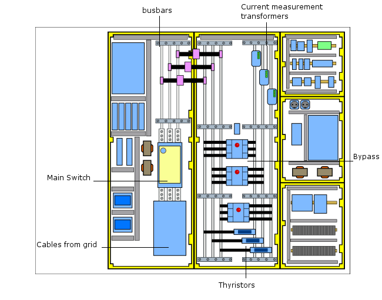

In the Wind Turbine Electrical Panel synoptic is used to show dangerous situations that should be taken into account.
It is clear that, if the Main Switch is turn on the vertical bars in the left most bay are powered ... but also is it is broken so it conducts continuously because the internal contactors are melt down due to a extra current.

Regarding the right busbars in the middle bay, they are directly connected to the Small and Large switches of the generator.
In stop conditions, these switches are off, so effectively these busbars should disconnected from the generator. If, by any reason, any of them are connected and the Blades are turning, them the generator will put some voltage on these busbars.
If that is the case and the bypass switches are connected (or melted-down) or the thyristors themselves are shortcircuited, then, even if the Main Switch is Off, you may have also those voltages in the busbars of the left bay.